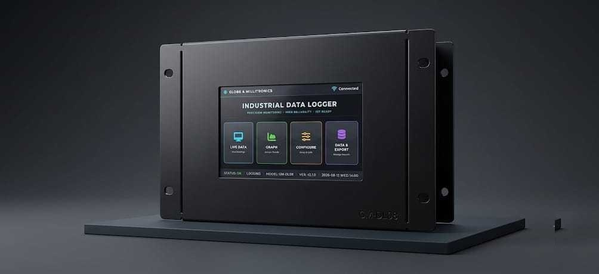

We engineer rugged data acquisition, monitoring, and automation platforms that bring precision, visibility, and control to demanding industrial environments.

Monitor every critical zone from a browser, phone, or control room display.
Secure logging, calibration certificates, and compliance-friendly reporting built in.
Engineered for heat, dust, humidity, and power fluctuations common on Indian factory floors.
Integrated systems from sensor to software
Multi-channel thermocouple and RTD loggers with 12-bit resolution, ±0.1% accuracy, and 1-sec sampling rates.
Web-based SCADA dashboards with real-time trends, programmable alarms, and relay-based equipment control.
In-house PCB design, machined aluminum enclosures, firmware development, and calibration — all under one roof.
Designed for harsh environments and high-accuracy operations
Handles -40°C to +85°C ambient, voltage fluctuations (207-253V AC), and IP66 ingress protection as standard.
Non-overwriting industrial SD storage with auto-save on power failure and checksum verification. Never fail an audit.
Built-in HTML5 web server. Monitor from any device — phone, tablet, or control room — without installing software.
Local technical support from Hyderabad. Same-week calibration and replacement. No overseas RMAs.
21 CFR Part 11 compliant. Audit trails, tamper-evident logging, and calibration certificates included.
Hardware, firmware, cloud platform, and dashboard — all designed and manufactured by us. Single accountability.
The GM-DL Pro — a proven platform for high-performance industrial logging
Multi-Channel Industrial Data Acquisition System
Real-time visibility, alarms, and control from a secure web-based dashboard
Interactive demo with simulated live data. Production connects to your actual sensors.
What customers value most about working with Kynatron
"Kynatron's data loggers have reduced our compliance reporting time by 60%. The 21 CFR Part 11 compliance was seamless — rock-solid reliability."
"We deployed 200 units across 3 plants. Zero failures in 18 months. Their after-sales support is what truly sets them apart."
"Their team understands manufacturing. They don't just sell hardware — they design the entire monitoring solution around your process."
Share your application, operating conditions, and compliance needs — we will help define the right solution.
Get a Free Consultation